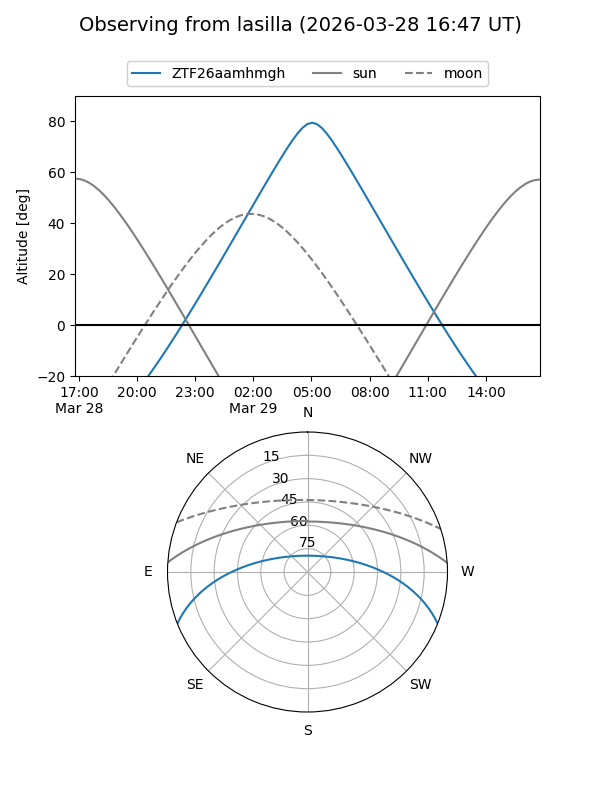
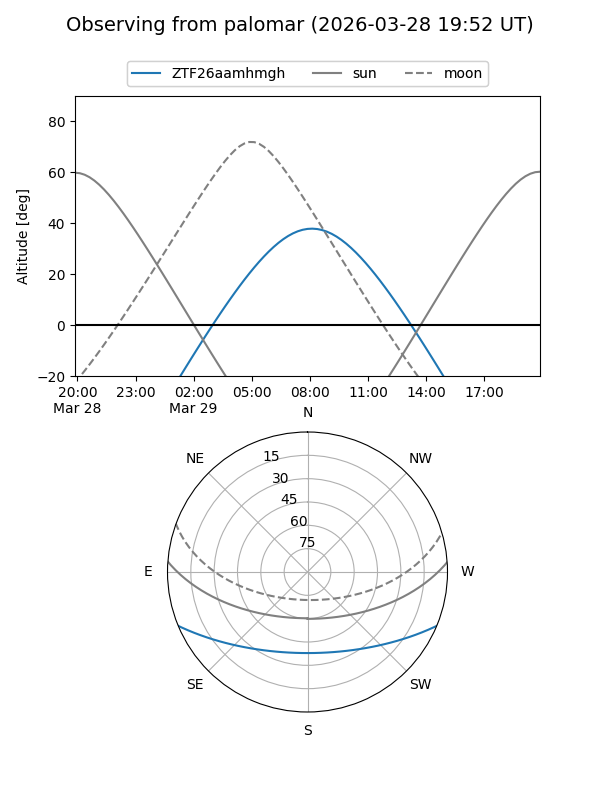
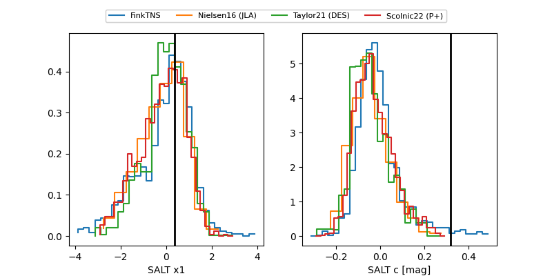

ZTF26aamhmgh
Target ZTF26aamhmgh at 2026-03-29 09:16
Aliases and brokers:
FINK: link
Lasair: link
ALeRCE: link
alt names
ZTF26aamhmgh (ztf,fink_ztf)
Coordinates:
equatorial (ra, dec) = 191.0396,-18.61058
equatorial (HMS+DMS) = 12:44:09.50,-18:36:38.08
galactic (l, b) = (300.5247,+44.22714)
Flags:
Photometry:
last ztfg=16.99
1 ztfg detections
Lightcurve
Visibility


Additional plots
